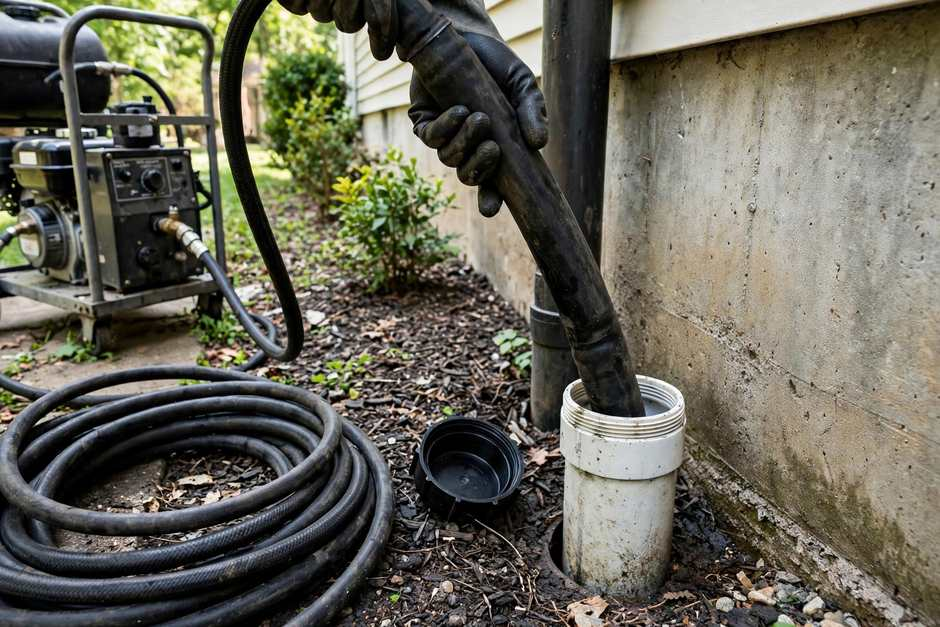
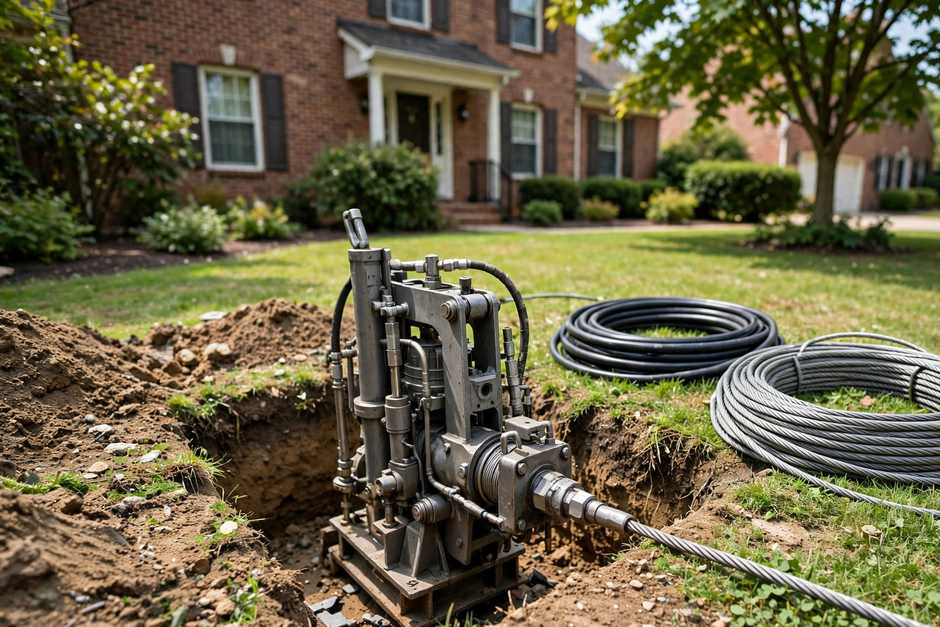
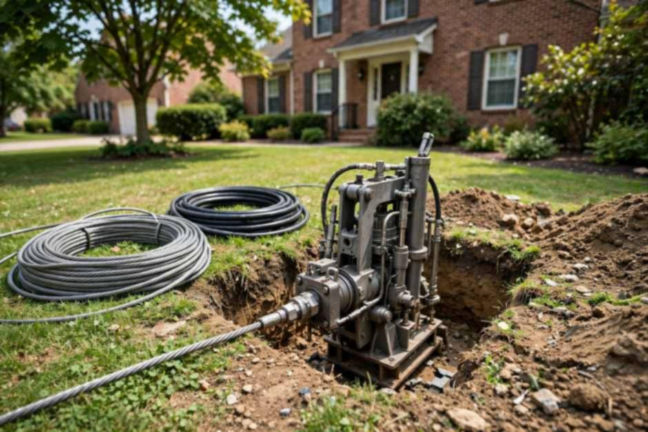

Sewer lateral repair in Belleville, Illinois
Sewer Line Repair in Belleville, IL for Damaged Lateral Sections
Sewer line repair addresses a damaged section of the lateral that carries wastewater from a home to the main, without replacing the length. Clay and cast-iron laterals in older homes are checked for cracks, joint gaps, root intrusion, and offsets shown by camera review. Hinkle Plumbing Company reviews camera findings, property-line position, and repair scope before work begins.
1610 W Main St, Belleville, IL 62220(618) 677-6556Monday through Friday, 8:00 AM to 4:30 PM. Closed Saturday and Sunday.
What sewer repair covers
Sewer line repair work for Belleville laterals
Sewer repair covers spot and section work on the lateral, from a cracked joint to a root-affected length that needs section replacement. Camera review comes before repair scope is set, since the camera shows where damage sits and how far it extends. For the diagnostic step, see sewer camera inspection in Belleville, IL and how recorded footage and locate marks guide repair decisions.
Cracked and broken sections
Cracks and breaks in clay or cast-iron laterals can follow ground movement, root pressure, and age-related wear at joints. Camera findings identify the cracked length, and repair addresses the section shown as damaged.
Joint gaps and offsets
Joints in clay laterals can open, shift, or offset as soil moves with moisture changes, allowing roots and soil into the line. The review checks joint alignment on camera footage before deciding whether joint or section work fits.
Root intrusion at joints
Roots enter laterals through joints and cracks, seeking moisture, and can narrow flow and widen gaps. Root-affected joints are reviewed on camera, with repair scope set around the joints and sections that show intrusion.
Bellies and low sections
Low sections, or bellies, hold water and debris where the lateral dips, slowing flow and collecting sediment. Camera review shows the dip and its extent, and repair scope follows whether the low section needs regrading or section work.
Property-line and program review
Establishing whether a break sits inside or beyond the property line matters before arranging repair of the outer section. The City Sewer Lateral Repair Program is administered by the City; check current City program details for terms and process.
About Hinkle Plumbing Company
Sewer repair from a Belleville plumbing company
Hinkle Plumbing Company reviews sewer laterals in Belleville, IL with camera findings guiding section repair, so work addresses the damaged length rather than the full lateral by default. Property-line position and lateral condition shape repair scope.
Hinkle Plumbing Company is based at 1610 W Main St, Belleville, IL 62220, and reviews sewer laterals in Belleville, IL for section repair guided by camera findings. The Google rating is 5.0 from 3 reviews. Monday through Friday, 8:00 AM to 4:30 PM. Closed Saturday and Sunday. Belleville operates a mixed sewer system, and the City notes heavy rain can bring basement backups. City Code describes the owner as responsible for the lateral from the building to the main, including under streets.

How we workA sewer lateral and camera equipment reviewed for section repair in Belleville, Illinois.
How sewer repair proceeds
From camera review to section repair
The steps flex with the condition of the job, but the sequence stays the same.
Discussion of backup and drainage signs
The discussion reviews backups, slow drainage, odors, and gurgling, with attention to which fixtures are affected and when signs appear. Lateral history and earlier drainage work are noted to shape camera review.
Camera inspection and locate review
Camera footage shows cracks, joints, roots, offsets, and low sections, with locate marks showing depth and position along the lateral. Findings are reviewed against the property line to establish where damage sits before repair scope is set.
Repair scope and method discussion
Repair scope follows camera findings, with section repair discussed where damage is limited and replacement discussion where damage extends along the lateral. Access, excavation, and surface restoration needs are reviewed as part of scope.
Section repair work
Repair addresses the damaged section through excavation, section replacement, or joint work, as camera findings require. The repaired section is checked for alignment and flow, with nearby joints reviewed before the excavation is closed.
Testing and flow review after repair
After repair, flow is checked through fixtures, with camera review used where needed to confirm the repaired section. Findings are discussed, including any related lateral needs shown on camera footage during review.
Repair methods
Section repair methods for damaged laterals
Section repair methods follow camera findings, with excavation used where the damaged length needs direct access for replacement or joint work. Trenchless methods offer a different approach that limits surface opening, with eligibility gated by camera findings. For that approach, see trenchless sewer repair in Belleville, IL and how lining and bursting differ from open section repair.
Excavated spot repair
Spot repair opens a limited excavation over the damaged joint or section, replaces the affected length, and restores flow through the lateral. Excavation extent follows camera locate marks, with surface restoration discussed as part of scope.
Section replacement within the lateral
Section replacement removes a damaged length of lateral and fits new pipework matched to the existing line and layout. Joints at each end are checked, and flow is tested through the replaced section before closing.
Joint repair and reseating
Joint repair addresses gaps, offsets, and root entry points at lateral joints, with the joint reseated or renewed as findings require. Camera review after repair checks joint alignment and flow through the repaired joint.
Root-affected section work
Root-affected sections are reviewed for joint gaps and cracks that allow root entry, with repair addressing the joints and sections that show intrusion. Clearing roots alone does not fix the joint fault, so repair scope follows camera findings.
Low section and alignment correction
Low sections that hold water and debris are reviewed for dip extent and flow effects shown on camera footage. Correction follows the dip and lateral layout, with regrading or section work discussed as repair scope requires.
Common patterns
Patterns in sewer line repair calls
The patterns below describe common sewer repair calls in general terms, without job details, to show how camera findings, property-line position, and section scope fit together. Each pattern starts with drainage signs and moves through camera review toward a defined repair section.

Recurring backup in low fixtures
A common call describes backups that return in low fixtures, with slow drainage and gurgling that affect more than one fixture at a time. Camera review checks the lateral for cracks, joint gaps, roots, and low sections, with locate marks showing where damage sits along the line. Property-line position is established from camera findings, so repair scope addresses the section that needs work. Section repair replaces the damaged length, with flow checked through fixtures before the work is complete.
Odor and damp ground over the lateral
A common call describes sewer odor near drains and damp ground over the line of the lateral, with drainage that slows during heavy use. Camera review checks for cracks and joint gaps that allow seepage into surrounding soil, with footage showing the extent of damage. Repair scope follows the damaged section shown on camera, with excavation planned around locate marks and surface needs. The section is replaced or repaired, with flow and joints checked before the excavation is closed.
Signs to review
Signs that may point to lateral damage
Most calls fall into a few patterns. Knowing which pattern applies decides what the visit involves.
Backups in low fixtures
Backups that affect low fixtures, such as basement floor drains and ground-level toilets, can point to a lateral fault. Camera review checks the lateral for damage, since fixture-level clearing does not address a fault further along the line.
Slow drainage across fixtures
Slow drainage that affects several fixtures can point to a lateral restriction from roots, offsets, or low sections. The review checks drainage patterns against camera findings to narrow whether the fault sits in the lateral or in branch lines.
Sewer odor near drains or outdoors
Sewer odor near drains, in basements, or outdoors over the lateral line can accompany cracks and joint gaps that allow seepage. Camera review checks the lateral for damage, with odor patterns reviewed against drainage signs.
Damp or sunken ground over the line
Damp, sunken, or unusually green ground over the lateral line can accompany seepage from cracks or joint gaps below. The review checks ground signs against camera findings, since surface signs alone do not define the damaged section.
Reviews from Google
What Customers Say on Google
★★★★★
“Very prompt and responsive, the worker was friendly and informative! Will use this company again!”
★★★★★
“Don did an outstanding job for me when I needed him and highly recommend his business”
★★★★★
“Rated 5.0 out of 5 across 3 Google reviews, all five stars.”

Why is camera inspection needed before sewer repair?
Camera inspection shows cracks, joints, roots, offsets, and low sections inside the lateral, with locate marks showing where damage sits along the line. Repair scope set without camera findings risks opening the wrong section or missing damage further along the lateral. Camera review is diagnostic work that guides repair, and it remains distinct from the repair itself.
Who is responsible for the sewer lateral in Belleville?
City Code describes the owner as responsible for the lateral from the building to the main, including the portion under a street or right-of-way. Establishing whether a break sits inside or beyond the property line matters before arranging repair of the outer section. The City Sewer Lateral Repair Program is administered by the City, and readers should check current City program details for current terms and process.
How does sewer repair differ from sewer replacement?
Sewer repair addresses a damaged section or joint while sound lengths of the lateral remain in place. Replacement renews the full lateral length, with scope that follows camera findings showing damage along the line rather than in one section. Camera findings, lateral condition, and property-line position guide whether section repair or full renewal fits the lateral.
What affects the cost of sewer line repair?
Cost is shaped by damaged length, depth, access, soil conditions, and surface restoration needs after excavation. Repairs under streets, driveways, or paved surfaces carry broader restoration scope than repairs in open ground. Call (618) 677-6556 to discuss camera findings and layout, so scope factors for the job can be reviewed without figures assumed in advance.
Related services
Related Services

Sewer Line Replacement in Belleville, IL
Full lateral renewal where camera findings show damage along the line rather than in one section.
Trenchless Sewer Repair in Belleville, IL
Lining and bursting methods that limit surface opening, with eligibility gated by camera findings.
Sewer Camera Inspection in Belleville, IL
Diagnostic camera review with recorded footage and locate marks that guide repair and replacement scope.Mon–Fri 8:00 AM–4:30 PM
Discuss sewer line repair in Belleville, IL
Call Hinkle Plumbing Company at (618) 677-6556 to discuss sewer line repair in Belleville, IL, including camera findings, property-line position, and repair scope. Monday through Friday, 8:00 AM to 4:30 PM. Closed Saturday and Sunday.
Talk with the local team
Request Sewer Line Repair
Call (618) 677-6556 during office hours, Monday through Friday, 8:00 AM to 4:30 PM. Tell us what is happening and we will talk through the next step.